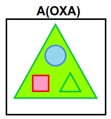
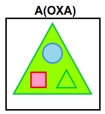
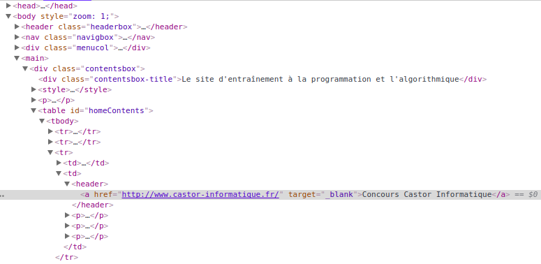

Ratkaisu
Voimme päätellä kirjainten ja kuvioiden väliset vastaavuudet.
- A vastaa vihreää kolmiota.
- X vastaa vaaleanpunaista neliötä.
- O vastaa sinistä ympyrää.
Lisäksi jos kirjaimen perässä on kirjaimia sulkujen sisällä, on kyseessä iso kuvio, jonka sisällä on sulkujen sisällä kuvatut alikuviot. Alikuviot kuvataan kolmella kirjaimella: ensimmäinen kertoo keskellä ylhäällä, toinen alhaalla vasemmalla ja kolmas alhaalla oikealla olevan alikuvion.
Kuvioita voidaan sisällyttää toisiinsa (isomman kuvion sisällä on pienempiä kuvioita), ja tämä hierarkia kuvataan koodissa suluilla. Tehtävässä esiintyy kolme tasoa: ison kuvion sisällä voi olla keskikokoisia kuvioita, joiden sisällä puolestaan voi olla pieniä kuvioita.
Huomaa, ettei suluissa ole välttämättä annettu kolmea kuviota. Alikuvioita voi olla vähemmänkin, kuten esimerkiksi vain yksi koodissa A(X) tai ei yhtään koodissa O().
 


Tämä on tietojenkäsittelyä!
Tehtävä havainnollistaa tietojenkäsittelytieteessä usein käytettyä tapaa puumaisen rakenteen esittämiseen sisäkkäisiä rakenteita sisältävässä tekstimuodossa. Sisäkkäiset rakenteet voidaan esittää tekstissä esimerkiksi sulkumerkkien avulla. Puumainen rakenne syntyy, kun tekstissä on elementtejä, joiden alaisuudessa on muita elementtejä, joiden alaisuudessa voi puolestaan olla muita elementtejä, ja niin edelleen.
Esimerkiksi internetin www-sivujen sisältö kuvataan puumaisena rakenteena, jossa sivun elementtejä voi olla sisäkkäin. Useimmissa nykyisissä www-selaimissa voi helposti tarkastella sivun rakennetta. Voit kokeilla tätä avaamalla selaimeen jonkin mieleisesi www-sivun, viemällä hiiren kursorin jonkin sivun elementin (esim. kuvan) kohdalle, klikkaamalla hiiren oikeaa nappia, ja valitsemalla avautuvasta valikosta Tarkista (tai Inspect element tms.). Tämä avaa sivun rakennetta kuvaavan työkalun, jossa voit tarkastella sivun elementtien puurakennetta.
Alla on esimerkki siitä, miltä erään selaimen työkalu näyttää tarkasteltaessa verkkosivun France-ioi rakennetta.
